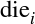
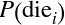

Chapter 9. Loops
Loops are R’s method for repeating a task, which makes them a useful tool for programming simulations. This chapter will teach you how to use R’s loop tools.
Let’s use the score function to solve a real-world problem.
Your slot machine is modeled after real machines that were accused of fraud. The machines appeared to pay out 40 cents on the dollar, but the manufacturer claimed that they paid out 92 cents on the dollar. You can calculate the exact payout rate of your machine with the score program. The payout rate will be the expected value of the slot machine’s prize.
Expected Values
The expected value of a random event is a type of weighted average; it is the sum of each possible outcome of the event, weighted by the probability that each outcome occurs:

You can think of the expected value as the average prize that you would observe if you played the slot machine an infinite number of times. Let’s use the formula to calculate some simple expected values. Then we will apply the formula to your slot machine.
Do you remember the die you created in Part I?
die<-c(1,2,3,4,5,6)
Each time you roll the die, it returns a value selected at random (one through six). You can find the expected value of rolling the die with the formula:
The s are the possible outcomes of rolling the die: 1, 2, 3, 4, 5, and 6; and the ’s are the probabilities associated with each of the outcomes. If your die is fair, each outcome will occur with the same probability: 1/6. So our equation simplifies to:
Hence, the expected value of rolling a fair die is 3.5. You may notice that this is also the average value of the die. The expected value will equal the average if every outcome has the same chance of occurring.
But what if each outcome has a different chance of occurring? For example, we weighted our dice in Chapter 2 so that each die rolled 1, 2, 3, 4, and 5 with probability 1/8 and 6 with probability 3/8. You can use the same formula to calculate the expected value in these conditions:
Hence, the expected value of a loaded die does not equal the average value of its outcomes. If you rolled a loaded die an infinite number of times, the average outcome would be 4.125, which is higher than what you would expect from a fair die.
Notice that we did the same three things to calculate both of these expected values. We have:
- Listed out all of the possible outcomes
- Determined the value of each outcome (here just the value of the die)
- Calculated the probability that each outcome occurred
The expected value was then just the sum of the values in step 2 multiplied by the probabilities in step 3.
You can use these steps to calculate more sophisticated expected values. For example, you could calculate the expected value of rolling a pair of weighted dice. Let’s do this step by step.
First, list out all of the possible outcomes. A total of 36 different outcomes can appear when you roll two dice. For example, you might roll (1, 1), which notates one on the first die and one on the second die. Or, you may roll (1, 2), one on the first die and two on the second. And so on. Listing out these combinations can be tedious, but R has a function that can help.
expand.grid
The expand.grid function in R provides a quick way to write out every combination of the elements in n vectors. For example, you can list every combination of two dice. To do so, run expand.grid on two copies of die:
rolls<-expand.grid(die,die)
expand.grid will return a data frame that contains every way to pair an element from the first die vector with an element from the second die vector. This will capture all 36 possible combinations of values:
rolls## Var1 Var2## 1 1 1## 2 2 1## 3 3 1## ...## 34 4 6## 35 5 6## 36 6 6
You can use expand.grid with more than two vectors if you like. For example, you could list every combination of rolling three dice with expand.grid(die, die, die) and every combination of rolling four dice with expand.grid(die, die, die, die), and so on. expand.grid will always return a data frame that contains each possible combination of n elements from the n vectors. Each combination will contain exactly one element from each vector.
You can determine the value of each roll once you’ve made your list of outcomes, . This will be the sum of the two dice, which you can calculate using R’s element-wise execution:
rolls$value<-rolls$Var1+rolls$Var2 head(rolls,3)## Var1 Var2 value## 1 1 2## 2 1 3## 3 1 4
R will match up the elements in each vector before adding them together. As a result, each element of value will refer to the elements of Var1 and Var2 that appear in the same row.
Next, you must determine the probability that each combination appears. You can calculate this with a basic rule of probability:
The probability that n independent, random events all occur is equal to the product of the probabilities that each random event occurs.
Or more succinctly:
So the probability that we roll a (1, 1) will be equal to the probability that we roll a one on the first die, 1/8, times the probability that we roll a one on the second die, 1/8:
And the probability that we roll a (1, 2) will be:
And so on.
Let me suggest a three-step process for calculating these probabilities in R. First, we can look up the probabilities of rolling the values in Var1. We’ll do this with the lookup table that follows:
prob<-c("1"=1/8,"2"=1/8,"3"=1/8,"4"=1/8,"5"=1/8,"6"=3/8)prob## 1 2 3 4 5 6## 0.125 0.125 0.125 0.125 0.125 0.375
If you subset this table by rolls$Var1, you will get a vector of probabilities perfectly keyed to the values of Var1:
rolls$Var1## 1 2 3 4 5 6 1 2 3 4 5 6 1 2 3 4 5 6 1 2 3 4 5 6 1 2 3 4 5 6 1 2 3 4 5 6prob[rolls$Var1]## 1 2 3 4 5 6 1 2 3 4 5 6## 0.125 0.125 0.125 0.125 0.125 0.375 0.125 0.125 0.125 0.125 0.125 0.375## 1 2 3 4 5 6 1 2 3 4 5 6## 0.125 0.125 0.125 0.125 0.125 0.375 0.125 0.125 0.125 0.125 0.125 0.375## 1 2 3 4 5 6 1 2 3 4 5 6## 0.125 0.125 0.125 0.125 0.125 0.375 0.125 0.125 0.125 0.125 0.125 0.375rolls$prob1<-prob[rolls$Var1]head(rolls,3)## Var1 Var2 value prob1## 1 1 2 0.125## 2 1 3 0.125## 3 1 4 0.125
Second, we can look up the probabilities of rolling the values in Var2:
rolls$prob2<-prob[rolls$Var2]head(rolls,3)## Var1 Var2 value prob1 prob2## 1 1 2 0.125 0.125## 2 1 3 0.125 0.125## 3 1 4 0.125 0.125
Third, we can calculate the probability of rolling each combination by multiplying prob1 by prob2:
rolls$prob<-rolls$prob1*rolls$prob2 head(rolls,3)## Var1 Var2 value prob1 prob2 prob## 1 1 2 0.125 0.125 0.015625## 2 1 3 0.125 0.125 0.015625## 3 1 4 0.125 0.125 0.015625
It is easy to calculate the expected value now that we have each outcome, the value of each outcome, and the probability of each outcome. The expected value will be the summation of the dice values multiplied by the dice probabilities:
sum(rolls$value*rolls$prob)## 8.25
So the expected value of rolling two loaded dice is 8.25. If you rolled a pair of loaded dice an infinite number of times, the average sum would be 8.25. (If you are curious, the expected value of rolling a pair of fair dice is 7, which explains why 7 plays such a large role in dice games like craps.)
Now that you’ve warmed up, let’s use our method to calculate the expected value of the slot machine prize. We will follow the same steps we just took:
- We will list out every possible outcome of playing the machine. This will be a list of every combination of three slot symbols.
- We will calculate the probability of getting each combination when you play the machine.
- We will determine the prize that we would win for each combination.
When we are finished, we will have a data set that looks like this:
## Var1 Var2 Var3 prob1 prob2 prob3 prob prize## DD DD DD 0.03 0.03 0.03 0.000027 800## 7 DD DD 0.03 0.03 0.03 0.000027 0## BBB DD DD 0.06 0.03 0.03 0.000054 0## ... and so on.
The expected value will then be the sum of the prizes multiplied by their probability of occuring:
Ready to begin?
To create a data frame of each combination of three symbols, you need to run expand.grid and give it three copies of wheel. The result will be a data frame with 343 rows, one for each unique combination of three slot symbols:
combos<-expand.grid(wheel,wheel,wheel,stringsAsFactors=FALSE)combos## Var1 Var2 Var3## 1 DD DD DD## 2 7 DD DD## 3 BBB DD DD## 4 BB DD DD## 5 B DD DD## 6 C DD DD## ...## 341 B 0 0## 342 C 0 0## 343 0 0 0
Now, let’s calculate the probability of getting each combination. You can use the probabilities contained in the prob argument of get_symbols to do this. These probabilities determine how frequently each symbol is chosen when your slot machine generates symbols. They were calculated after observing 345 plays of the Manitoba video lottery terminals. Zeroes have the largest chance of being selected (0.52) and cherries the least (0.01):
get_symbols<-function(){wheel<-c("DD","7","BBB","BB","B","C","0")sample(wheel,size=3,replace=TRUE,prob=c(0.03,0.03,0.06,0.1,0.25,0.01,0.52)}
Your names should match the input that you want to look up. In this case, the input will be the character strings that appear in Var1, Var2, and Var3. So your lookup table should look like this:
prob<-c("DD"=0.03,"7"=0.03,"BBB"=0.06,"BB"=0.1,"B"=0.25,"C"=0.01,"0"=0.52)
Now let’s look up our probabilities.
Remember that you use R’s selection notation to look up values in a lookup table. The values that result will be keyed to the index that you use:
combos$prob1<-prob[combos$Var1]combos$prob2<-prob[combos$Var2]combos$prob3<-prob[combos$Var3]head(combos,3)## Var1 Var2 Var3 prob1 prob2 prob3## DD DD DD 0.03 0.03 0.03## 7 DD DD 0.03 0.03 0.03## BBB DD DD 0.06 0.03 0.03
Now how should we calculate the total probability of each combination? Our three slot symbols are all chosen independently, which means that the same rule that governed our dice probabilities governs our symbol probabilities:
You can calculate the probabilities of every possible combination in one fell swoop with some element-wise execution:
combos$prob<-combos$prob1*combos$prob2*combos$prob3 head(combos,3)## Var1 Var2 Var3 prob1 prob2 prob3 prob## DD DD DD 0.03 0.03 0.03 0.000027## 7 DD DD 0.03 0.03 0.03 0.000027## BBB DD DD 0.06 0.03 0.03 0.000054
The sum of the probabilities is one, which suggests that our math is correct:
sum(combos$prob)## 1
You only need to do one more thing before you can calculate the expected value: you must determine the prize for each combination in combos. You can calculate the prize with score. For example, we can calculate the prize for the first row of combos like this:
symbols<-c(combos[1,1],combos[1,2],combos[1,3])## "DD" "DD" "DD"score(symbols)## 800
However there are 343 rows, which makes for tedious work if you plan to calculate the scores manually. It will be quicker to automate this task and have R do it for you, which you can do with a for loop.
for Loops
A for loop repeats a chunk of code many times, once for each element in a set of input. for loops provide a way to tell R, “Do this for every value of that.” In R syntax, this looks like:
for(valueinthat){this}
The that object should be a set of objects (often a vector of numbers or character strings). The for loop will run the code in that appears between the braces once for each member of that. For example, the for loop below runs print("one run") once for each element in a vector of character strings:
for(valueinc("My","first","for","loop")){print("one run")}## "one run"## "one run"## "one run"## "one run"
The value symbol in a for loop acts like an argument in a function. The for loop will create an object named value and assign it a new value on each run of the loop. The code in your loop can access this value by calling the value object.
What values will the for loop assign to value? It will use the elements in the set that you run the loop on. for starts with the first element and then assigns a different element to value on each run of the for loop, until all of the elements have been assigned to value. For example, the for loop below will run print(value) four times and will print out one element of c("My", "second", "for", "loop") each time:
for(valueinc("My","second","for","loop")){print(value)}## "My"## "second"## "for"## "loop"
On the first run, the for loop substituted "My" for value in print(value). On the second run it substituted "second", and so on until for had run print(value) once with every element in the set:
If you look at value after the loop runs, you will see that it still contains the value of the last element in the set:
value
## "loop"I’ve been using the symbol value in my for loops, but there is nothing special about it. You can use any symbol you like in your loop to do the same thing as long as the symbol appears before in in the parentheses that follow for. For example, you could rewrite the previous loop with any of the following:
for(wordinc("My","second","for","loop")){print(word)}for(stringinc("My","second","for","loop")){print(string)}for(iinc("My","second","for","loop")){print(i)}
Choose your symbols carefully
R will run your loop in whichever environment you call it from. This is bad news if your loop uses object names that already exist in the environment. Your loop will overwrite the existing objects with the objects that it creates. This applies to the value symbol as well.
For loops run on sets
In many programming languages, for loops are designed to work with integers, not sets. You give the loop a starting value and an ending value, as well as an increment to advance the value by between loops. The for loop then runs until the loop value exceeds the ending value.
You can recreate this effect in R by having a for loop execute on a set of integers, but don’t lose track of the fact that R’s for loops execute on members of a set, not sequences of integers.
for loops are very useful in programming because they help you connect a piece of code with each element in a set. For example, we could use a for loop to run score once for each row in combos. However, R’s for loops have a shortcoming that you’ll want to know about before you start using them: for loops do not return output.
for loops are like Las Vegas: what happens in a for loop stays in a for loop. If you want to use the products of a for loop, you must write the for loop so that it saves its own output as it goes.
Our previous examples appeared to return output, but this was misleading. The examples worked because we called print, which always prints its arguments in the console (even if it is called from a function, a for loop, or anything else). Our for loops won’t return anything if you remove the print call:
for(valueinc("My","third","for","loop")){value}##
To save output from a for loop, you must write the loop so that it saves its own output as it runs. You can do this by creating an empty vector or list before you run the for loop. Then use the for loop to fill up the vector or list. When the for loop is finished, you’ll be able to access the vector or list, which will now have all of your results.
Let’s see this in action. The following code creates an empty vector of length 4:
chars<-vector(length=4)
The next loop will fill it with strings:
words<-c("My","fourth","for","loop")for(iin1:4){chars[i]<-words[i]}chars## "My" "fourth" "for" "loop"
This approach will usually require you to change the sets that you execute your for loop on. Instead of executing on a set of objects, execute on a set of integers that you can use to index both your object and your storage vector. This approach is very common in R. You’ll find in practice that you use for loops not so much to run code, but to fill up vectors and lists with the results of code.
Let’s use a for loop to calculate the prize for each row in combos. To begin, create a new column in combos to store the results of the for loop:
combos$prize<-NAhead(combos,3)## Var1 Var2 Var3 prob1 prob2 prob3 prob prize## DD DD DD 0.03 0.03 0.03 0.000027 NA## 7 DD DD 0.03 0.03 0.03 0.000027 NA## BBB DD DD 0.06 0.03 0.03 0.000054 NA
The code creates a new column named prize and fills it with NAs. R uses its recycling rules to populate every value of the column with NA.
You can score the rows in combos with:
for(iin1:nrow(combos)){symbols<-c(combos[i,1],combos[i,2],combos[i,3])combos$prize[i]<-score(symbols)}
After you run the for loop, combos$prize will contain the correct prize for each row. This exercise also tests the score function; score appears to work correctly for every possible slot combination:
head(combos,3)## Var1 Var2 Var3 prob1 prob2 prob3 prob prize## DD DD DD 0.03 0.03 0.03 0.000027 800## 7 DD DD 0.03 0.03 0.03 0.000027 0## BBB DD DD 0.06 0.03 0.03 0.000054 0
We’re now ready to calculate the expected value of the prize. The expected value is the sum of combos$prize weighted by combos$prob. This is also the payout rate of the slot machine:
sum(combos$prize*combos$prob)## 0.538014
Uh oh. The expected prize is about 0.54, which means our slot machine only pays 54 cents on the dollar over the long run. Does this mean that the manufacturer of the Manitoba slot machines was lying?
No, because we ignored an important feature of the slot machine when we wrote score: a diamond is wild. You can treat a DD as any other symbol if it increases your prize, with one exception. You cannot make a DD a C unless you already have another C in your symbols (it’d be too easy if every DD automatically earned you $2).
The best thing about DDs is that their effects are cumulative. For example, consider the combination B, DD, B. Not only does the DD count as a B, which would earn a prize of $10; the DD also doubles the prize to $20.
Adding this behavior to our code is a little tougher than what we have done so far, but it involves all of the same principles. You can decide that your slot machine doesn’t use wilds and keep the code that we have. In that case, your slot machine will have a payout rate of about 54 percent. Or, you could rewrite your code to use wilds. If you do, you will find that your slot machine has a payout rate of 93 percent, one percent higher than the manufacturer’s claim. You can calculate this rate with the same method that we used in this section.
Here is a version of score that handles wild diamonds:
score<-function(symbols){diamonds<-sum(symbols=="DD")cherries<-sum(symbols=="C")# identify case# since diamonds are wild, only nondiamonds# matter for three of a kind and all barsslots<-symbols[symbols!="DD"]same<-length(unique(slots))==1bars<-slots%in%c("B","BB","BBB")# assign prizeif(diamonds==3){prize<-100}elseif(same){payouts<-c("7"=80,"BBB"=40,"BB"=25,"B"=10,"C"=10,"0"=0)prize<-unname(payouts[slots[1]])}elseif(all(bars)){prize<-5}elseif(cherries>0){# diamonds count as cherries# so long as there is one real cherryprize<-c(0,2,5)[cherries+diamonds+1]}else{prize<-0}# double for each diamondprize*2^diamonds}
To update the expected value, just update combos$prize:
for(iin1:nrow(combos)){symbols<-c(combos[i,1],combos[i,2],combos[i,3])combos$prize[i]<-score(symbols)}
Then recompute the expected value:
sum(combos$prize*combos$prob)## 0.934356
This result vindicates the manufacturer’s claim. If anything, the slot machines seem more generous than the manufacturer stated.
while Loops
R has two companions to the for loop: the while loop and the repeat loop. A while loop reruns a chunk while a certain condition remains TRUE. To create a while loop, follow while by a condition and a chunk of code, like this:
while(condition){code}
while will rerun condition, which should be a logical test, at the start of each loop. If condition evaluates to TRUE, while will run the code between its braces. If condition evaluates to FALSE, while will finish the loop.
Why might condition change from TRUE to FALSE? Presumably because the code inside your loop has changed whether the condition is still TRUE. If the code has no relationship to the condition, a while loop will run until you stop it. So be careful. You can stop a while loop by hitting Escape or by clicking on the stop-sign icon at the top of the RStudio console pane. The icon will appear once the loop begins to run.
Like for loops, while loops do not return a result, so you must think about what you want the loop to return and save it to an object during the loop.
You can use while loops to do things that take a varying number of iterations, like calculating how long it takes to go broke playing slots (as follows). However, in practice, while loops are much less common than for loops in R:
plays_till_broke<-function(start_with){cash<-start_with n<-0while(cash>0){cash<-cash-1+play()n<-n+1}n}plays_till_broke(100)## 260
repeat Loops
repeat loops are even more basic than while loops. They will repeat a chunk of code until you tell them to stop (by hitting Escape) or until they encounter the command break, which will stop the loop.
You can use a repeat loop to recreate plays_till_broke, my function that simulates how long it takes to lose money while playing slots:
plays_till_broke<-function(start_with){cash<-start_with n<-0repeat{cash<-cash-1+play()n<-n+1if(cash<=0){break}}n}plays_till_broke(100)## 237
Summary
You can repeat tasks in R with for, while, and repeat loops. To use for, give it a chunk of code to run and a set of objects to loop through. for will run the code chunk once for each object. If you wish to save the output of your loop, you can assign it to an object that exists outside of the loop.
Repetition plays an important role in data science. It is the basis for simulation, as well as for estimates of variance and probability. Loops are not the only way to create repetition in R (consider replicate for example), but they are one of the most popular ways.
Unfortunately, loops in R can sometimes be slower than loops in other languages. As a result, R’s loops get a bad rap. This reputation is not entirely deserved, but it does highlight an important issue. Speed is essential to data analysis. When your code runs fast, you can work with bigger data and do more to it before you run out of time or computational power. Chapter 10 will teach you how to write fast for loops and fast code in general with R. There, you will learn to write vectorized code, a style of lightning-fast code that takes advantage of all of R’s strengths.